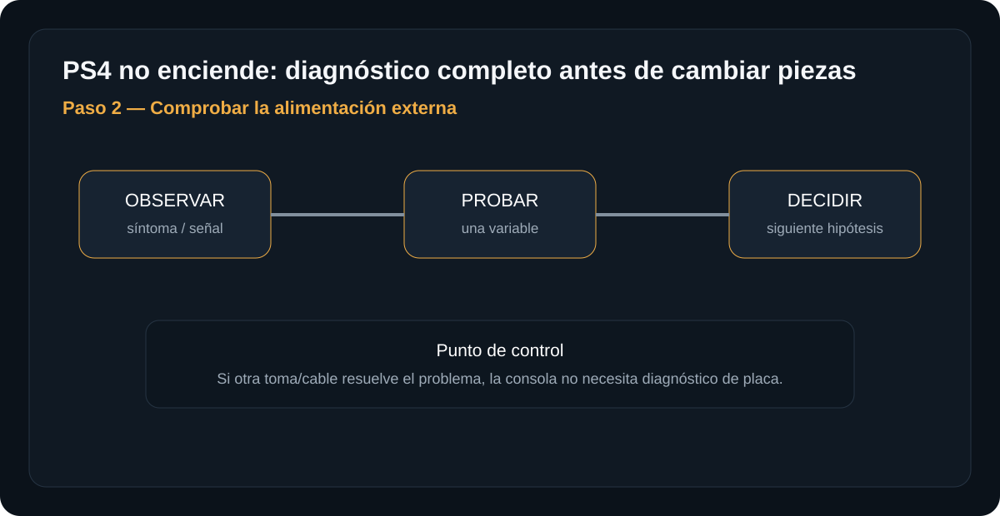
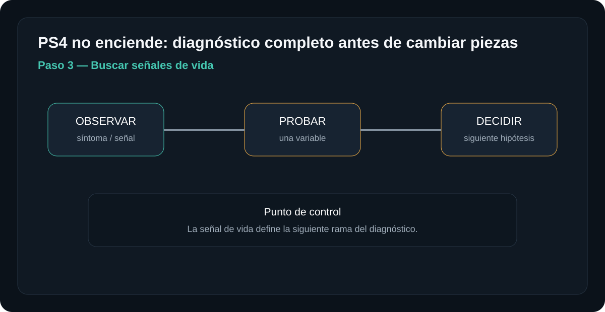

Introducción

Una PlayStation 4 que no enciende no debe diagnosticarse simplemente sustituyendo piezas hasta que funcione. La finalidad de esta guía es seguir una ruta lógica que permita determinar si el problema está en la alimentación externa, la fuente interna, la señal de encendido o la placa principal.
La PS4 utiliza una fuente de alimentación con una etapa de standby y una salida principal que se habilita cuando la electrónica de control solicita el encendido. Por eso, encontrar aproximadamente 5 V no demuestra que toda la fuente esté funcionando correctamente.
Del mismo modo, encontrar 12 V no demuestra por sí solo que la placa principal esté funcionando. Cada medición debe relacionarse con el estado de la consola y con la secuencia en la que aparece o desaparece la tensión.
Antes de empezar: seguridad
Retira la alimentación y los periféricos antes de abrir la consola. No trabajes con una fuente de red abierta ni realices mediciones energizadas si no tienes formación e instrumental apropiados.
- Trabaja sobre una superficie limpia, seca y bien iluminada.
- Organiza tornillos y conectores por etapa.
- Fotografía las conexiones antes de desconectarlas.
- No fuerces una cubierta. Una resistencia inesperada suele indicar que todavía existe una fijación pendiente.
- No midas el primario de la fuente si no tienes formación específica en fuentes conmutadas.
- No toques los capacitores grandes ni componentes del primario de una fuente conectada o recientemente desconectada.
- No introduzcas puntas metálicas sin aislamiento en conectores donde puedan provocar un cortocircuito.
- Nunca sustituyas un fusible por uno de mayor corriente ni lo puentes.
Herramientas y material
Diagnóstico paso a paso
Preparar la consola e identificar el problema
Antes de desmontar, determina exactamente qué hace la consola cuando intentas encenderla.

Qué hacer
- Desconecta alimentación, HDMI, USB y red.
- Deja conectados únicamente los elementos necesarios para comprobar el comportamiento básico de la consola.
- Observa si existe beep, LED, ventilador, cambio de color o cualquier otra señal.
- Anota exactamente qué ocurre al pulsar el botón de encendido.
La consola debe estar completamente aislada antes de comenzar cualquier inspección interna.
Resultado esperadoAl finalizar este paso debes poder describir el síntoma sin utilizar todavía una conclusión como "la fuente está dañada".
Comprobar la alimentación externa
Antes de desmontar la PS4, elimina las causas externas más sencillas.

Qué comprobar
- Prueba la toma eléctrica con otro aparato que sepas que funciona.
- Inspecciona visualmente el cable de alimentación.
- Comprueba que el conector entre correctamente en la consola.
- Si dispones de otro cable compatible y seguro, realiza una prueba cruzada.
Si una toma o un cable diferente hace que la consola funcione, no existe razón para desmontar la fuente ni diagnosticar la placa.
Resultado esperadoLa alimentación externa debe quedar descartada antes de avanzar hacia la electrónica interna.
Buscar señales de vida
El comportamiento de la consola proporciona información sobre la etapa que debemos investigar.

Observa el patrón
- No hay beep, luz ni reacción: comienza por alimentación externa, standby y fuente.
- Hace beep pero no continúa: la consola recibió una orden de encendido; hay que comprobar qué ocurre después.
- Luz azul durante un instante y se apaga: puede existir un problema en la fuente, una protección o una falla en la placa.
- Enciende y se apaga bajo carga: observa especialmente el comportamiento de la línea principal de 12 V.
- Enciende pero no muestra imagen: no condenes automáticamente la fuente. El diagnóstico puede desplazarse hacia vídeo, APU, memoria, almacenamiento o placa.
Que una PS4 se apague inmediatamente después de intentar encenderse puede estar relacionado con la fuente, pero ese comportamiento por sí solo no demuestra que la fuente sea la causa.
Siguiente pasoAntes de comprar una fuente, mide sus tensiones y observa cuándo aparecen y cuándo desaparecen.
Identificar el modelo y la fuente de alimentación
No existe un único pinout universal para todas las fuentes de PlayStation 4.
Qué debes identificar
- Localiza la etiqueta inferior de la consola y anota el modelo completo CUH-xxxx.
- Si desmontas la consola, identifica también el número de parte de la fuente.
- Entre las familias utilizadas en diferentes revisiones pueden encontrarse referencias como ADP-160, ADP-200 y ADP-240.
- Algunas variantes documentadas incluyen referencias como ADP-200ER, ADP-240CR y ADP-240AR.
- No asumas que el conector de una PS4 original, PS4 Slim o PS4 Pro tiene la misma distribución de señales.
- Busca el pinout correspondiente a la combinación exacta de consola y fuente antes de colocar las puntas del multímetro.
Debes terminar esta etapa sabiendo exactamente qué fuente estás midiendo y cuál es la distribución de sus pines.
ImportanteUn pinout incorrecto puede provocar un cortocircuito o llevarte a interpretar una señal de control como si fuera una salida de alimentación.
Medir 5 V de standby y salida de 12 V
Las mediciones de la fuente deben realizarse en el lado secundario y respetando el momento correcto.
La fuente no necesariamente entrega 12 V durante todo el tiempo. El circuito de standby puede permanecer activo mientras la salida principal de 12 V permanece deshabilitada.
Cuando la consola solicita el encendido, una señal de control hace que la fuente habilite la salida principal.
Configuración del multímetro
- Coloca el multímetro en voltaje DC.
- Si tu multímetro utiliza rangos manuales, selecciona un rango que incluya 12 V DC; un rango de 20 V DC es habitual en multímetros manuales.
- Coloca la punta negra en un punto identificado correctamente como GND del lado secundario.
- Coloca la punta roja únicamente sobre el pin o punto que la documentación identifica como 5 V standby / 5VSB o 12 V.
- Nunca selecciones medición de corriente para realizar estas pruebas de tensión.
Medición de 5 V de standby
El standby es una de las primeras referencias que debemos comprobar porque permite determinar si la fuente está generando su tensión secundaria de espera.
- Con la fuente correctamente conectada a la alimentación de CA y siguiendo el procedimiento correspondiente al modelo, coloca la punta negra en GND secundario.
- Coloca la punta roja sobre el punto de 5 V standby identificado mediante el pinout exacto.
- Registra la tensión sin mover las puntas.
En determinadas fuentes y revisiones de PS4 se documentan valores de standby próximos a 5 V DC. Como referencia práctica, pueden encontrarse lecturas alrededor de 4.8 a 5.1 V DC.
El valor exacto debe contrastarse con la fuente y el modelo concreto. No utilices este intervalo para identificar pines de una fuente diferente.
¿Qué significa la medición de 5 V?
| Medición 5VSB | Interpretación | Siguiente paso |
|---|---|---|
| ≈ 4.8–5.1 V | El circuito de standby está produciendo una tensión compatible con la referencia. | Comprobar orden de encendido y salida de 12 V. |
| 0 V | La etapa de standby no está entregando tensión o existe un problema de alimentación, conexión o protección. | Confirmar entrada, conexiones y fuente. |
| Muy por debajo de 5 V | Puede existir una anomalía en standby o una carga anormal. | Confirmar modelo, pinout y punto de medición. Si la lectura se mantiene, investigar fuente o carga. |
| Claramente por encima de 5 V | La tensión no coincide con el comportamiento esperado de una salida de standby de aproximadamente 5 V. | Detener la sustitución de piezas y verificar la fuente específica. |
El circuito de standby puede funcionar correctamente mientras la etapa encargada de producir los 12 V presenta un problema.
Medición de la salida principal de 12 V
En varias fuentes de PS4 la salida principal de 12 V permanece deshabilitada mientras la consola está en espera. Por ello, encontrar aproximadamente 0 V en esa línea antes de solicitar el encendido puede ser normal para determinadas fuentes.
- Mantén el multímetro en voltaje DC.
- Conecta la punta negra a un punto de GND secundario correctamente identificado.
- Coloca la punta roja en el punto de salida de 12 V indicado específicamente para esa fuente.
- Observa la lectura mientras la consola permanece en standby.
- Solicita el encendido de la consola.
- Observa si la tensión aumenta aproximadamente hasta 12 V DC.
- Si la tensión aparece y posteriormente cae, registra exactamente cuándo ocurre la caída.
La secuencia importa más que una lectura aislada
| Estado | 5 V standby | 12 V | Qué investigar |
|---|---|---|---|
| Standby | ≈ 5 V | Puede ser 0 V | Estado previo al encendido. |
| Orden de encendido | ≈ 5 V | Debe aparecer aproximadamente 12 V en las fuentes donde esa es la salida principal especificada. | Fuente y señal de habilitación. |
| Consola encendida | ≈ 5 V | ≈ 12 V | Si la consola continúa fallando, avanzar hacia la placa. |
| 12 V aparece y cae | ≈ 5 V | 12 V → 0 V | Protección, carga anormal, señal de control o problema de placa/fuente. |
Interpretar las mediciones
La medición solamente tiene sentido cuando se relaciona con el comportamiento de la consola.
5 V ausentes
Si la fuente está correctamente alimentada pero no aparece la tensión de standby, el problema se concentra inicialmente en la fuente o en su alimentación.
Siguiente paso:Confirmar conexión, entrada de CA y referencia de la fuente. Si el 5 V continúa ausente, evaluar la fuente antes de diagnosticar la placa.
5 V presentes, 12 V nunca aparece
La etapa de standby funciona, pero la salida principal no se habilita.
Siguiente paso:Comprobar el circuito de habilitación según el pinout exacto. No conviene asumir que la fuente está defectuosa sin comprobar la señal de control.
5 V presentes y 12 V aparece
La fuente está produciendo sus salidas principales de forma compatible con la prueba realizada.
Siguiente paso:Si la consola sigue sin arrancar, el diagnóstico debe avanzar hacia la placa principal, señales de encendido, protecciones y reguladores secundarios.
12 V aparece y después desaparece
Este patrón demuestra que la fuente puede iniciar su salida principal, pero algo ocurre durante la secuencia de arranque.
Siguiente paso:Determinar si la caída es provocada por la fuente entrando en protección, por una carga anormal en la placa o porque desaparece la señal de habilitación.
No interpretes una tensión aislada. Relaciona siempre el valor medido con el momento, la señal de control y el comportamiento de la consola.
Si la fuente entrega 5 V y 12 V
No tiene sentido seguir cambiando fuentes sin evidencia.
Si las mediciones de la fuente son correctas y la consola continúa sin arrancar, el diagnóstico cambia de nivel. Ahora hay que investigar qué ocurre en la placa principal.
Secuencia recomendada
- Confirmar que la señal de encendido llega correctamente desde el sistema de control.
- Comprobar que los 12 V realmente permanecen presentes cuando la consola intenta iniciar.
- Revisar fusibles y protecciones de la placa.
- Buscar cortocircuitos evidentes en las principales líneas de alimentación.
- Continuar hacia reguladores secundarios y líneas de alimentación del sistema.
- En modelos concretos, investigar los circuitos asociados al Southbridge, APU, memoria y gestión de energía cuando las pruebas anteriores lo indiquen.
Un diagnóstico de placa debe avanzar desde las condiciones básicas hacia las más complejas. Si la alimentación primaria y secundaria todavía no está correctamente caracterizada, buscar un supuesto fallo del APU es prematuro.
Una prueba negativa no es un fracaso: es información. Registra qué se probó, con qué condición, qué tensión se obtuvo y qué cambió. Evita reemplazar varios componentes al mismo tiempo porque después será difícil saber cuál era realmente la causa.
Tabla rápida de diagnóstico
| Resultado | Qué significa | Prioridad |
|---|---|---|
| 5 V ausentes | No existe standby correcto. | Entrada / conexión / fuente |
| 5 V correctos + 12 V ausente | Standby funciona, pero la salida principal no aparece. | Habilitación / fuente |
| 5 V + 12 V correctos | La fuente supera la prueba básica. | Placa principal |
| 12 V aparece y cae | Existe un problema durante el arranque. | Protección / carga / control |
| 12 V estable pero sin arranque | La fuente deja de ser la primera sospechosa. | Señales / placa |
Errores frecuentes al diagnosticar una PS4
- Medir 12 V en standby y declarar dañada la fuente. En varias fuentes la salida principal se habilita solamente después de la orden de encendido.
- Usar un pinout de otra fuente. La disposición de señales puede cambiar entre modelos y revisiones.
- Confundir GND con una señal de control. No todos los pines del conector son salidas de potencia.
- Medir tensión sin observar cuándo aparece. Una lectura de 12 V durante un instante y una lectura estable de 12 V son diagnósticamente diferentes.
- Condenar la fuente porque la consola se apaga. La protección puede estar reaccionando a una carga o condición existente en la placa.
- Abrir la fuente para buscar componentes quemados. Una fuente puede fallar sin presentar daños visibles.
- Medir el primario sin experiencia. No es necesario para este diagnóstico básico y aumenta considerablemente el riesgo.
- Sustituir varias piezas a la vez. Si cambias fuente, placa o componentes simultáneamente, pierdes información sobre la causa original.
Seguridad durante las mediciones
La fuente de una PS4 contiene circuitos conectados directamente a la red eléctrica. El lado primario puede presentar tensiones peligrosas incluso después de desconectar el equipo.
- No midas el primario de la fuente si no tienes formación específica en fuentes conmutadas.
- No toques capacitores grandes ni componentes del primario.
- No realices mediciones con puntas deterioradas o sin aislamiento adecuado.
- Identifica primero el pinout correspondiente a tu fuente.
- Evita apoyar ambas puntas del multímetro de forma que puedan tocar dos pines simultáneamente.
- Si no tienes experiencia trabajando con electrónica energizada, limita el diagnóstico a comprobaciones externas y considera utilizar una fuente conocida en buen estado como prueba cruzada.
- Nunca sustituyas un fusible por uno de mayor corriente ni lo puentes.
Fuentes, licencias y referencias técnicas
Esta guía combina una ruta de diagnóstico práctica con referencias técnicas de reparación. Los valores de tensión deben contrastarse siempre con el modelo de consola, revisión de hardware y número de parte de la fuente.
- Fuente de la imagen principal — Wikimedia Commons.
- Creative Commons BY-SA 4.0 cuando corresponda a la licencia indicada en la imagen.
- iFixit — documentación de reparación de PlayStation 4 como referencia técnica.
- Documentación técnica específica del fabricante de la fuente cuando esté disponible.
Las referencias de aproximadamente 5 V de standby y 12 V de salida principal corresponden a determinadas fuentes y revisiones. No deben utilizarse para identificar pines en una fuente diferente.
El modelo CUH y el número de parte de la fuente deben determinarse antes de realizar una medición sobre el conector.